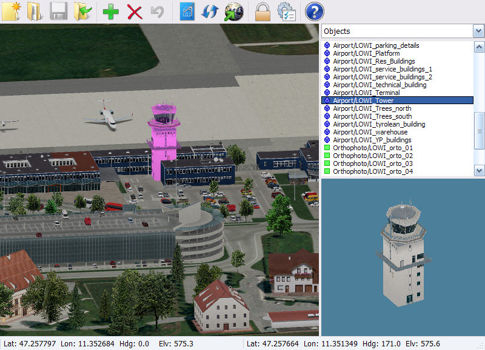

DSF overlay scenery editor
Overview
This application edits X-Plane®
DSF overlay scenery packages for X-Plane 8.30 or later.
It runs on Windows 2000 or later, MacOS 10.3.9 or later and Linux.
This document is a reference - it is assumed that you're familiar with
X-Plane's scenery system and that you know how to create X-Plane scenery
objects. If not, then you can get started by following
this tutorial.
Setting up
Users of MacOS 10.3 should first install
wxPython 2.5.3 or later (you don't need to
install MacPython - it's already installed on 10.3).
The first time that you run the application you are asked to
identify X-Plane's top-level folder (ie the folder which
contains the X-Plane, Plane-Maker etc applications).
The application window
The application window consists of five parts:

Tool bar
|
Create a new scenery package. This just creates a new folder
in X-Plane's Custom Scenery folder. |
|
Open an existing scenery package. All the packages in
X-Plane's Custom Scenery folder are listed but you
can only actually edit those that use DSF overlays (rather than
ENVs or "full" DSFs). |
|
Save the scenery package. Any existing .dsf
files are backed up with the extension .dsf.bak |
|
Import objects and their textures from another scenery package and add them to the list of objects.
The imported objects are placed in custom objects or objects if either of these folders exist, otherwise in the package's top-level folder.
The texture path names in the imported objects are fixed up as required.
Before you import objects from another scenery package you should first check
the license terms; these often prohibit re-distribution of individual
objects. |
|
Add the object that is highlighted in the
list of objects to the scenery.
The object is added at the current location and with the current heading. |
|
Delete the selected object(s). |
|
Undo the last edit. |
|
Set a background image.
You can use the W, S, A, D, Q, E and C keys to adjust the background image. |
 |
Reload the object, texture and apt.dat files in the scenery package.
Use this if you have modified any of these files outside of this application.
Also use this if you have added new objects and you want these new objects
to appear in the list of objects.
(Note that the DSF files are not reloaded - just re-open the package if you want to revert to the last saved version). |
|
Go to an airport. |
|
Change X-Plane's top-level folder and display options.
Do not change the location of X-Plane's top-level folder while you are editing a scenery package, otherwise your unsaved changes will be lost. |
|
Show this help file. |
Main window
This shows the objects in a 1°×1° region of the loaded
scenery package.
By default terrain is textured and displayed as flat - you can change this with .
Runways, taxiways and navaids are displayed in simplified form and cannot
be edited.
Scenery objects from other scenery packages and "autogen" scenery objects
from the default scenery are not displayed at all.
Navigate with the cursor keys or mouse. Hold down Shift for
bigger steps or Ctrl for tiny steps:
| Up, Down, Left, Right |
Move |
| Mouse click on window edge |
Move |
| Drag middle mouse button |
Move |
| Home, End |
Rotate |
| PageUp, PageDown |
Change elevation |
| Mouse wheel, -, + |
Zoom |
Note: On a MacBook hold down Fn and use the cursor keys for the Home, End, PageUp and PageDown keys.
Selected objects are highlighted in pink in the main window.
To select objects:
| Mouse click |
Select object |
| Mouse drag |
Select objects |
| Ctrl/Cmd and click or drag |
Toggle selected objects |
| Space |
Select all objects in the main window (even if they're too small to see). |
| Ctrl Space |
Toggle selection of all objects in the main window |
You can't select or otherwise manipulate runways, taxiways or navaids
(ILS, VOR, DME etc).
If you select a single polygon (facade, forest, draped or exclusion region)
you can click on an individual node (ie corner) to select it.
The selected node is highlighted in white.
These keys affect the selected objects or the selected polygon node.
Hold down Shift for bigger steps or Ctrl
for tiny steps:
| Mouse click and drag |
Move object or polygon node |
| W, S, A, D |
Move selected objects or polygon node |
| Q, E |
Rotate selected objects |
| R, F |
Increase/decrease facade height or forest density, or rotate a draped polygon's texture. |
| C |
Centre on selected objects or polygon node |
| N |
Select the next use of this object in the current 1°×1° region. |
| Ctrl N |
Add the next use of this object to the selection. |
| Insert/Enter or |
Add new object or polygon node |
| Ctrl Insert/Enter or Ctrl |
Add new polygon node, going clockwise |
| Shift Insert/Enter or Shift |
Add a hole in a forest or draped polygon |
| Delete or |
Delete selected objects or polygon node |
| Shift Delete or Shift |
Delete selected hole in a polygon |
| Ctrl/Cmd Z, or |
Undo the last edit. |
Note: You can also use the keys on the numeric keypad (if your keyboard has one) - ensure that NumLock is on.
All the objects, facades etc in the scenery package folder are listed under
the heading "Objects", including those that are present in the scenery
package folder but are not used in the scenery.
The type of object is indicated by a symbol:
- - 3D object (
.obj)
- - Facade polygon (
.fac)
- - Forest polygon (
.for)
- - Draped polygon (
.pol) with a repeating texture (requires X-Plane 8.50 or later)
- - Draped polygon (
.pol) for use as an orthophoto (requires X-Plane 8.60 or later)
- - Other polygon
- - Missing or unreadable object or polygon
- - Exclusion region
Objects that have been made available by scenery libraries, including
X-Plane's built-in libraries, are listed under further headings in the
drop-down list. Note that later versions of X-Plane come with more extensive
libraries than earlier versions, so you you should always design using the
earliest version of X-Plane that you want your scenery package to work
with.
(See this tutorial if you're interested in making your own scenery libraries).
You can only add objects to your scenery that appear in these lists
(think of this as your
"palette"):
- Use to copy objects from another scenery package. (Don't use this to copy objects from a scenery
library; just select the object from the appropriate list).
- Use if you have otherwise added or modified objects in the scenery package folder, or if you have installed a new scenery library.
Preview picture
A preview of the currently selected object is shown (when available)
underneath the list of objects.
If more than one picture is shown this
means that the library object exists in multiple versions; X-Plane will
choose which version of the object to display at random, but this
application always displays the same version.
(However if only one picture is shown for a library object then you cannot
assume that there is only one version).
You can drag the separators between the preview window and the other
windows to make the preview picture smaller.
Status bar
This shows your current location, heading, elevation and, if you have
selected an object or polygon node, the object or node's location, heading and
elevation (or average location if you have selected more than one object).
Differences between this application and X-Plane
This application displays terrain and objects in orthogonal projection
(no perspective) and in a simplified form. ie:
- No lights, lines, shading or animation.
Objects that only contain lights or lines are displayed as small
"placeholder" cubes so that they can be edited.
- This application can only properly display facade and draped polygons.
Other types of polygon (beaches, forests, lines, strings etc) are
displayed as an outline. Beach polygons cannot be edited.
- When you add a new draped polygon this application behaves differently
depending on the contents of the
.pol file:
- A draped polygon (
.pol) file that contains a
TEXTURE statement is assumed to be intended for use as a
repeating texture (requires X-Plane 8.50 or later).
- A draped polygon (
.pol) file that contains a
TEXTURE_NOWRAP statement is assumed to be intended for use as a quadrilateral orthophoto (requires X-Plane 8.60 or later).
OverlayEditor does not allow you to add nodes or holes to orthophotos.
X-Plane lets you use the same draped polygon (.pol) file
for either purpose but you will see visual artifacts if you use a
TEXTURE statement in an orthophoto or use a
TEXTURE_NOWRAP statement in a repeating texture.
- X-Plane allows some types of polygons to use bezier curves,
however this application does not understand or display bezier polygon curves.
Any bezier control points will be deleted when you edit the polygon.
- Terrain textures are simplified - no beaches or overlay textures.
- No flattening of terrain around airports. Terrain is displayed as if the
X-Plane "allow sloped runways" rendering option is turned on.
X-Plane prioritises scenery packages; and it doesn't load scenery from
lower priority packages once it has found a "full" DSF for the required area.
A package's priority is determined by its ASCIIbetical order in
the Custom Scenery folder.
So an overlay scenery package will not be displayed if it has a name later
in the alphabet than a "full" scenery package for the same area.
This application lets you edit the overlay scenery package and does not
warn you about this problem.
You can see the order in which X-Plane prioritises your packages
by looking at the file Log.txt in X-Plane's top-level folder.
When you open or reload a scenery package this application warns about any
objects that are missing or that it can't read, but lets you edit and save
the scenery package anyway. X-Plane will crash unless you either provide
implementations of missing and unreadable objects, or delete them from the
scenery.
X-Plane supports having multiple versions of a single library object,
and chooses which object to display at random.
However, this application always displays the first version of an object
that it comes across.
Many objects in the global8 library exist in multiple versions
- eg the library object /lib/global8/us/in_sq_90_30r.obj
exists in eight different versions in X-Plane 8.40; if you use that object
in your scenery package then this application will always display the same
version, but X-Plane will display one of the eight versions chosen at random.
Troubleshooting
OverlayEditor is too slow
OverlayEditor needs to load lots of textures and uses much more memory
if the preferences are set to display terrain. Closing other applications,
particularly applications like X-Plane that also make heavy use of textures,
will make OverlayEditor load faster. Or you can tell OverlayEditor not to
display terrain; press
and select "No terrain".
Editing is slower when the preferences are set to display terrain elevation.
This is particularly noticable when editing polygons because OverlayEditor
has to fit the polygons to the terrain mesh. OverlayEditor runs much
faster if you tell it not to display elevation; press
and select "No terrain" or "Show terrain".
OverlayEditor complains that it "Can't read one or more objects"
Your scenery package uses objects or polygons that are either missing or
unreadable.
Missing or unreadable objects are displayed as small grey "placeholder" cubes.
Missing or unreadable polygons are displayed as grey "placeholder" shapes.
- To delete all uses of the missing or unreadable object or polygon in the current 1°×1° region:
- Select the object or polygon in the list of objects.
- Repeatedly press Ctrl N until all the placeholder objects or polygons are highlighted.
- Press Delete or .
Note that neither X-Plane nor OverlayEditor can read objects designed for
X-Plane v5. You can identify objects by looking at them in a text editor;
the second line should start with 2, 700 or a larger
number and the third line should start with OBJ.
Otherwise this is either an X-Plane v5 object or it is not an X-Plane
object at all.
If the object looks OK then please report the problem to the
author.
My scenery object just appears as a small grey blob in OverlayEditor
OverlayEditor doesn't draw lights or lines - objects that only contain
lights or lines are displayed as small "placeholder" cubes.
This is a limitation of the application.
My forest/draped polygon just appears as a red outline in OverlayEditor
In X-Plane polygons must be "simple",
ie a polygon's sides must not intersect each other.
X-Plane won't display non-simple polygons.
OverlayEditor displays non-simple polygons as a bright red outline.
My scenery object has the right shape, but appears grey/untextured in OverlayEditor
This happens when OverlayEditor fails to find or read the texture file
listed in your object.
OverlayEditor expects the texture filename to have the correct case -
edit your object to correct the texture filename.
OverlayEditor cannot read palletised or interlaced PNG files - save your
PNG file in 24bit or 32bit non-interlaced format.
Then press to tell OverlayEditor to re-read your object.
I want to get rid of "autogen" scenery objects from the default scenery
- You can use an exclusion region:
- Navigate to the area from which you want to remove the scenery objects.
- Select "Exclusions" from the drop-down Objects menu.
- Choose "Exclude: Objects" from the list.
- Press Enter or .
- Drag the corners of the new region as desired.
OverlayEditor doesn't display the "autogen" scenery objects, so you may have to experiment a bit.
I want to get rid of scenery objects from another scenery package
Follow the above procedure. In addition, your scenery package must have a
higher priority than the other package.
So you may need to rename one of the two packages to change their relative
priority.
My scenery objects don't show up in X-Plane
- Check that OverlayEditor saved your package correctly:
- Run OverlayEditor again, open your scenery package and check that
it looks OK.
-
- Check that OverlayEditor saved your package in the correct copy of X-Plane:
- Press
and check that the "X-Plane location" points to the copy of X-Plane
that you're running.
If it doesn't, change the "X-Plane location" setting.
Then, in Explorer or the Finder, move your scenery package folder to the
copy of X-Plane that you're running.
-
- Check your X-Plane settings:
- Run X-Plane and choose Settings » Rendering Options.
Check that "number of objects" is not set to "None".
-
- Check that X-Plane found your scenery package:
- Quit X-Plane. Open the file
Log.txt in the top-level
X-Plane folder.
Your scenery package should be listed at least twice in this file;
firstly in the list of scenery packages, eg:
4 Custom Scenery\My package\
and secondly when X-Plane loads the DSF(s) from your scenery package, eg:
DSF load time: nnn for file Custom Scenery\My package\Earth nav data:+50-010\+51-001.dsf
If X-Plane is not loading DSFs from your package then this is probably
because another package has a higher priority
than your package.
Look in Log.txt to see which DSF files X-Plane is loading from
the Custom Scenery folder - this will tell you the name
of the package that is hiding your package.
Rename one or both of the packages to change their relative priority.
Limitations
- Does not display autogen scenery.
- Does not display lights or lines in objects.
- Does not convert or edit
.env files.
- Displays but does not edit runways, taxiways, navaids etc.
- There is a limit to the number of objects that you can select at once. The number depends on your graphics hardware.
- Palletised or interlaced PNG files appear untextured (X-Plane can't read the former either).
License
These tools are licensed under the Creative Commons Attribution-Noncommercial-ShareAlike license.
Use of these tools does not impose any requirement on you to license
your work under a Creative Commons license. For the avoidance of doubt,
this means that you can license any scenery that you make using these
tools under commercial terms (subject to any licensing restrictions on
any imported or library objects that you use).
The author would appreciate a courtesy copy of any commercial
scenery that you make using these tools, but you are under
no obligation.